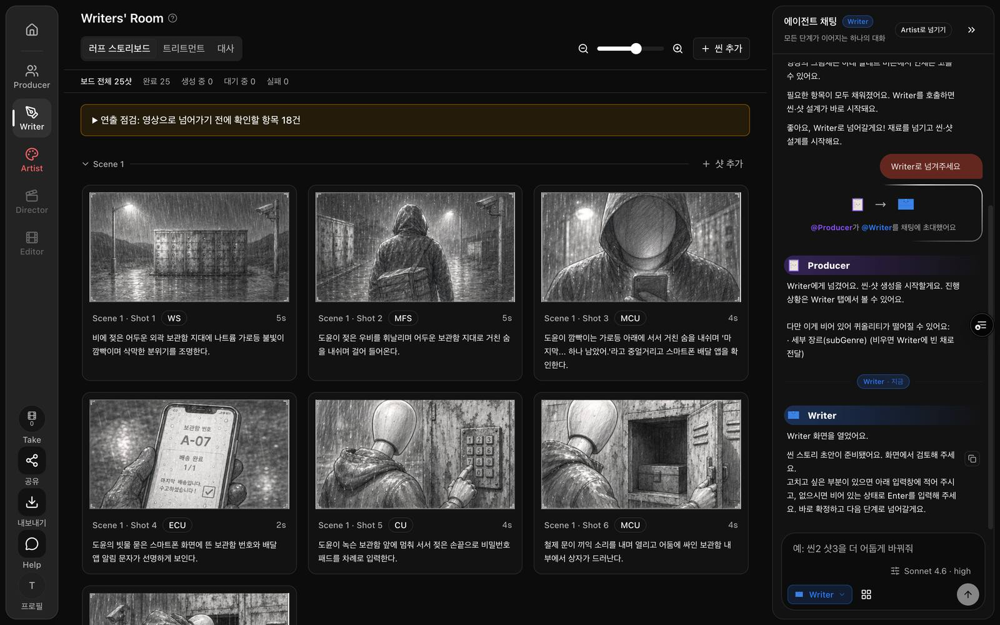
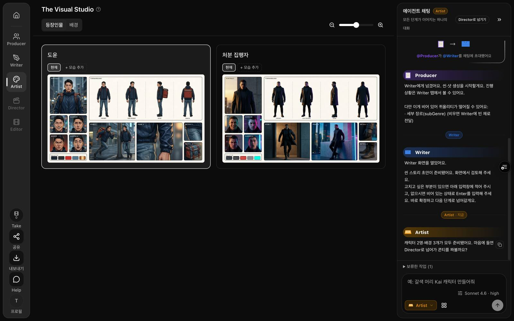
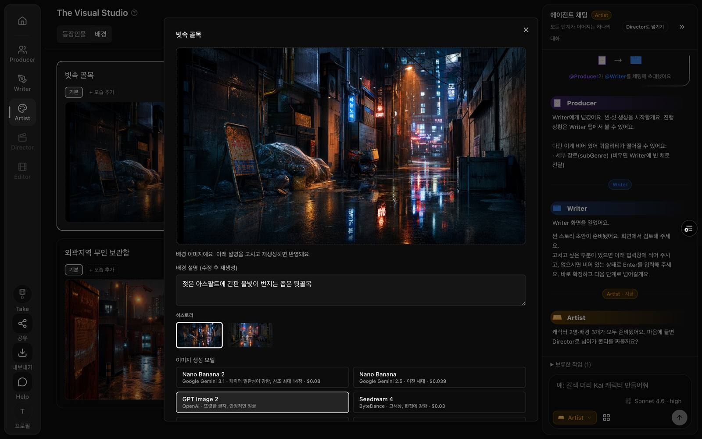
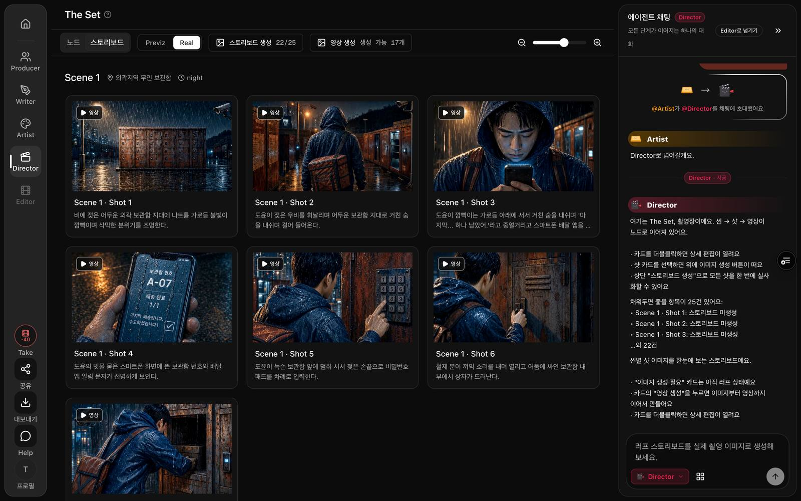
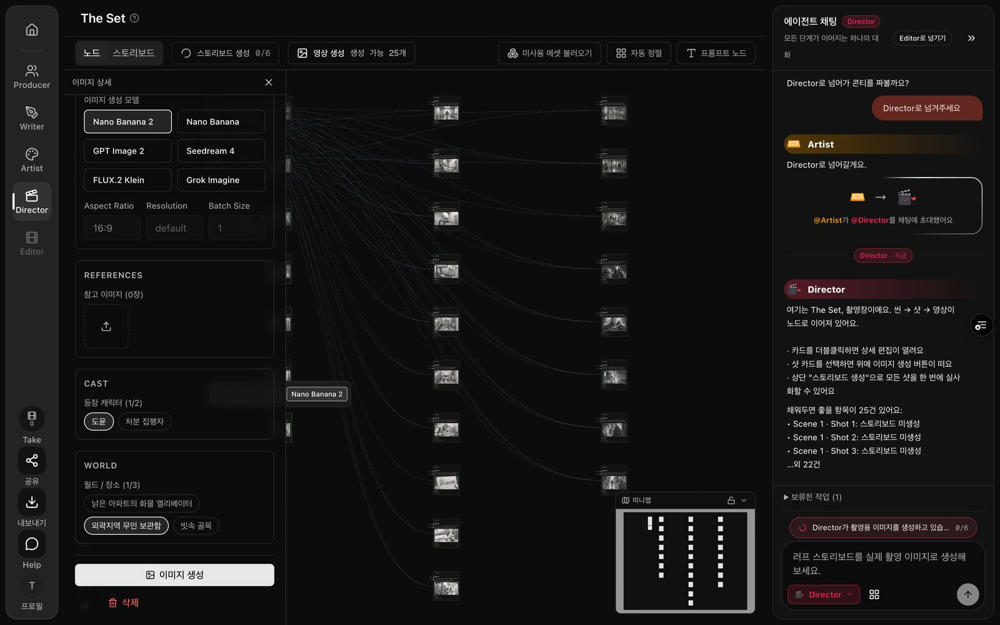
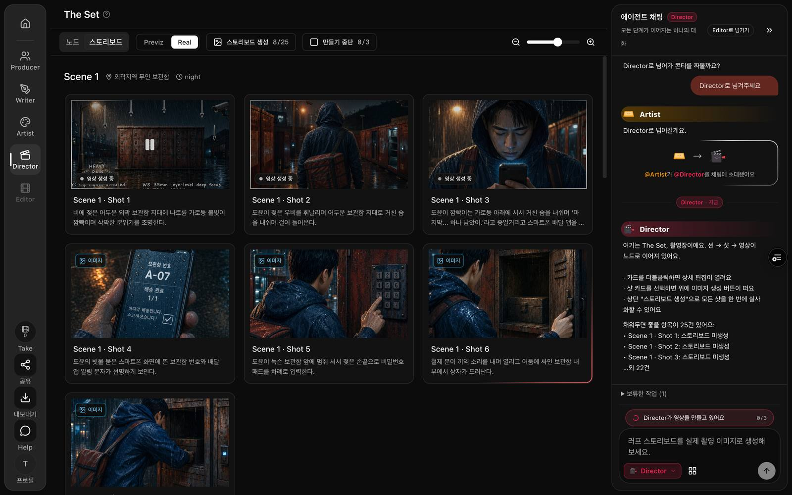
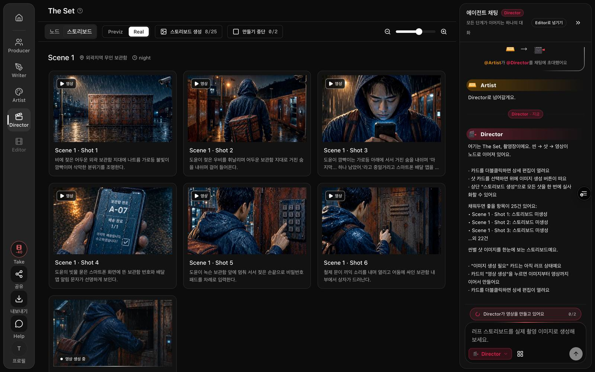
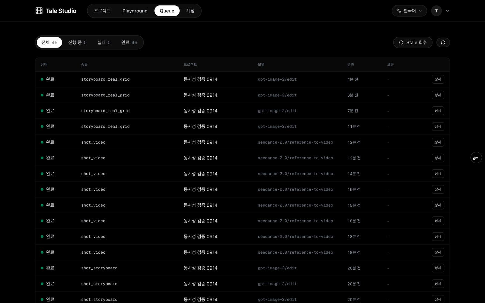

검증 보고서 · 2026-09-14
테스트 계정으로 dev 프리뷰에 들어가 Producer→Writer→Artist→Director를 처음부터 끝까지 돌렸다. 러프 25장·인물 시트·배경·실사 26장·실사 그리드 4장·영상 8개가 전부 완성됐고, 7번째 이미지와 4번째 영상은 거절돼 DB에 기록되지 않았으며, 탭을 닫아도 영상 일괄이 이어졌다. 멈춘 카드는 0개.
결정할 것 1개: 운영 DB에 언제 올릴지. 알아둘 것 4개.
대상 커밋 8dcbd07b(dev) · dev 프리뷰 tale-git-dev-talestudio.vercel.app · 개발 DB pbiumddivadgbzxuymak · 테스트 계정 test-d4fd109f@tale.studio · 프로젝트 77dfa43c · 13:10~13:58 KST
가이드대로 하되 도중에 내가 정한 것. 전부 되돌리기 쉬움이라 오너 확인 칸은 비어 있다.
| 결정 | 왜 | 버린 선택지 | 되돌리기 |
|---|---|---|---|
| Producer 단계는 픽스처로 채우고(모델 호출 없음) Writer부터 실제로 돌렸다tests/fixtures/producer-complete.ts | 이번 변경은 Writer 이후 생성 경로만 건드린다. Producer 채팅까지 실제로 돌리면 시간·비용만 든다 | Producer 채팅부터 실제로 | 쉬움 |
| 영상 개별 4번째 거절(가이드 3-A)은 안 눌렀다 — 영상 일괄이 4번째를 내려다 거절당한 기록으로 대신 본다 | 화면에서 개별 영상 버튼을 찾지 못했다. 일괄의 4번째 시도가 같은 "내 영상 3개" 검사를 거쳐 거절됐고 서버 기록(user_video 4건)이 남았다 | 버튼 위치를 더 찾기 | 쉬움 — 오너가 직접 눌러 보면 됨 |
| 영상 일괄은 25개가 아니라 "생성 가능한" 8개만 돌렸다 | 화면이 고른 대로. 3개씩 이어가는지·탭 닫아도 되는지는 8개로 충분히 보인다 | 25개 전부 | 쉬움 |
| 거절 토스트는 화면 캡처 대신 화면 안 글자(DOM)와 서버 기록으로 증거를 남겼다 | 토스트가 4초만 떠 있어 캡처 타이밍을 여섯 번 놓쳤다. 글자는 두 번 읽었고 서버가 거절을 8건 기록했다 | 캡처될 때까지 유료 요청 반복 | 쉬움 — 오너가 눌러 보면 바로 보임 |
| 테스트 계정을 개발 DB에 새로 만들었다test-d4fd109f@tale.studio | 오너 계정은 관리자라 개인 한도가 면제된다. 한도 검사에는 일반 계정이 필요하다 | 기존 운영 테스트 계정 | 쉬움 |
| 스크린샷은 jpg로 줄여 넣었다(14장 2.2MB) | png 그대로면 28MB. 지난번 71MB 지적 | png 원본 | 쉬움 |
가이드(dev-test-guide.md)에서 "통과"로 정한 조건 하나하나를 실제 화면·DB와 대조했다.
기준: 각 경로에서 완성 이미지/영상이 카드에 뜬다. 30분 넘게 "생성 중"이면 실패.
| 경로 | 실제 | DB 기록 |
|---|---|---|
| Writer 러프 전체 생성 | 25샷 전부 완성. 7 → 8 → 6 → 4개씩 이어서 나갔고 자리 없음 안내 0회 | shot_rough_storyboard 완료 7건 |
| Artist 초안 자동 생성(인물 2·배경 3) | Artist 진입 시 자동으로 채워짐 — 예약 선행으로 바뀐 초안 경로가 실제로 돈 것 | character_view 2 · world_shot 3 완료 |
| Artist 인물 시트 재생성 | 도윤 시트 재생성 완료 | character_view 완료 +1 |
| Artist 배경 재생성 | 빗속 골목 재생성 완료 | world_shot 완료 +1 |
| Director 실사 단건 | 개별 버튼으로 20장 완성 | shot_storyboard 완료 20건 |
| Director 실사 그리드 일괄 | 4시트(16샷) 완성, 스토리보드 22/25. 3샷은 시트 없는 인물 때문에 제외 | storyboard_real_grid 완료 4건 |
| Director 영상 | 8개 전부 완성 | shot_video 완료 8건 |




기준: 7번째에서 "이미지는 동시에 6개까지…" 안내, 그 뒤 자동으로 아무 일도 없음, 하나 끝난 뒤 다시 누르면 시작.
서로 다른 샷 7개를 27초 안에 연속으로 눌렀다. 화면은 7개 모두 "생성 중"으로 보였지만 DB에는 6개만 있었다 — 7번째는 접수 자체가 거절된 것. 이어 8·9번째도 거절. 화면 안 글자로 읽은 안내:
화면 토스트 (DOM 텍스트, 13:39 KST)이미지는 동시에 6개까지 생성할 수 있어요. 진행 중인 생성이 끝나면 다시 시도해 주세요.
서버가 남긴 거절 기록 — 어느 축인지가 함께 적힌다(이번 변경으로 새로 생긴 항목).
writer_observability_events · generation_submit_rejected_quota13:38:39 axis=user_image kind=shot_storyboard queued=6 limit=6
13:39:37 axis=user_image kind=shot_storyboard queued=6 limit=6
13:39:50 axis=user_image kind=shot_storyboard queued=6 limit=6
13:40:51 axis=user_image kind=shot_storyboard queued=6 limit=6
앞의 6개가 끝난 뒤(13:41) 10·11·12번째를 누르니 그대로 시작됐다. 자동으로 다시 나간 요청은 없었다.

기준: 일괄은 3개 돌고 하나 끝나면 4번째가 자동 시작, 탭을 닫았다 열어도 진행이 복원되고 계속, 전부 완료.
13:45 일괄 시작 → 3개 접수, 5개 보관. 13:48 탭을 닫았다. 닫은 상태로 DB를 25초마다 봤다:
generation_jobs · shot_video (탭 닫힌 동안)+25s 완료 1 · 진행 3 ← 하나 끝나자 4번째가 14초 전에 시작
+50s 완료 2 · 진행 3 ← 5·6번째 시작
+200s 완료 5 · 진행 3 ← 7·8번째 시작
13:57 완료 8 · 진행 0
서버가 4번째를 내려다 "내 영상 3개" 검사에 걸린 기록 4건 — 실패로 세지 않고 보관했다가 하나 끝나면 이어간 것(9/9 결정 ①, 이번 (가) 결정 그대로).
writer_observability_events13:49:10 axis=user_video kind=shot_video queued=3 limit=3
13:49:28 axis=user_video …
13:49:47 axis=user_video …
13:52:01 axis=user_video …


기준: dev 전체 칸을 넘기면 "지금 생성 자리가 모두 사용 중이에요" 안내.
dev 전체 칸은 10이었다(서버가 DB에 옮겨 적은 값: legacy-1000 · 10 — 이 동기화가 실제로 도는 것도 확인). 한 계정으로는 최대 9(이미지 6+영상 3)라 못 채운다. 이 축은 개발 DB 실제 동시 실험 14건(67→68 유지, 계정 스필오버 5/5)으로 이미 확인했으니 브라우저로는 안 했다.
기준: "생성 중"에 멈춘 것 0개. 있으면 접수 응답을 잃은 예약이 남은 것.
모든 생성이 끝난 뒤 큐 화면 "진행 중 0". DB에서도 접수 번호를 못 받은 예약(reserved:) 잔존 0건 — 테스트 내내 25초마다 확인했고 한 번도 0이 아닌 적이 없었다.

| 질문 | 안 정하면 뭐가 막히나 | 선택지 | 추천 | 언제까지 |
|---|---|---|---|---|
| 운영 DB에 4축 트리거를 언제 올릴까 | 운영은 옛 트리거라 이미지·전체 축 초과가 계속 가능하다. 단 코드(예약 먼저)는 운영에서도 그대로 돌아간다 — 거절만 못 할 뿐 | (a) 이번 검증으로 충분 → main 머지 + 운영 DB 마이그레이션 지금 / (b) dev에서 며칠 더 써 보고 | (a). 가이드 판정 조건 1·2·3·5가 전부 통과했다 | 이번 주 |
| 상황 | 틀리면 뭐가 깨지나 | 확인 방법 |
|---|---|---|
| ① 실사 그리드 일괄의 첫 실행이 1시트(4샷) 뒤 멈췄다. 다시 누르니 2시트→1시트→1시트로 끝까지 이어갔다. 자리 거절 기록은 없었다 | 사용자가 "일괄인데 4장만 됐네"를 한 번 겪고 다시 눌러야 한다. 재현 1회, 원인 미확인 — 이번 변경(남은 수 계산)일 수도, 원래 있던 동작일 수도 | 실사 일괄을 한 번 더 눌러 첫 라운드 뒤 이어가는지. 안 이어가면 알려 달라, 라우트 응답을 보면 바로 안다 |
| ② 자리가 없어 거절된 샷 카드가 잠깐 "생성 중"처럼 보인다(화면이 먼저 표시를 바꾸고 거절 뒤 되돌리지 않음) | 사용자가 거절된 줄 모르고 기다릴 수 있다. 토스트는 뜬다 | 7번째 이미지를 눌러 카드가 몇 초 뒤 원래대로 돌아오는지 |
| ③ 영상 일괄 진행 표시가 "0/2"였는데 실제로는 8개를 돌렸다 | 표시만 틀리다. 이번 변경 밖(진행 표시 집계) | 일괄 시작 직후 상단 숫자와 실제 노드 수 비교 |
| ④ dev 프리뷰의 전체 칸은 10, 운영은 68. 개발과 운영이 같은 fal 계정을 쓰면 서로의 작업 수를 모른다(이전 보고 그대로) | 개발 테스트 중 운영 사용자 생성이 fal 줄 뒤로 밀린다 | Vercel 운영/개발 FAL_KEYS 비교 |